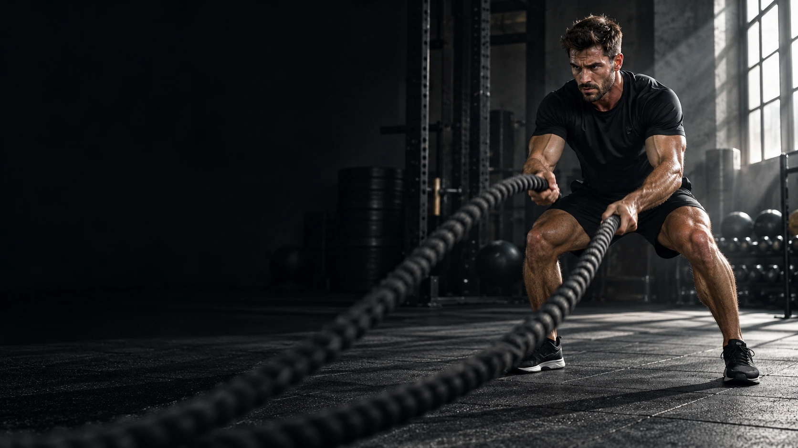

★★★★★
«Когда у тренировок появляется понятный ритм, в них хочется возвращаться.»
ААлександр, 32Демонстрационный отзыв

Твоя цель. Твой ритм. Программы, тренеры и сообщество, которое вдохновляет двигаться.
Твой план, твои упражнения, твой прогресс. Попробуй персональную тренировку прямо здесь.
Прогресс сохраняется в этом браузереПерсональный план
Видеотренировки
Ритм и восстановление
Аналитика прогресса
«Когда у тренировок появляется понятный ритм, в них хочется возвращаться.»
«Мне близка идея баланса: не только нагрузка, но и восстановление.»
«Отмечать выполненные подходы удобно. Маленькие шаги складываются в прогресс.»
Твой первый шаг
Твой личный ритм
Твой максимум
В этой демонстрации можно выбрать цель и уровень подготовки. Реальную программу необходимо подбирать с квалифицированным тренером.
Концепт предусматривает формат онлайн и занятия в клубе. Демо-трекер работает в браузере.
Сравните наполнение пакетов ниже. Выбор откроет демонстрационную заявку без списания средств.
Отметки демо-тренировки сохраняются только в этом браузере.